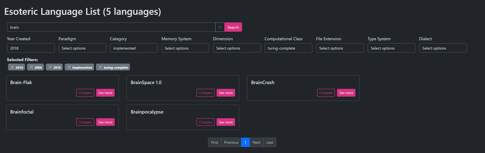
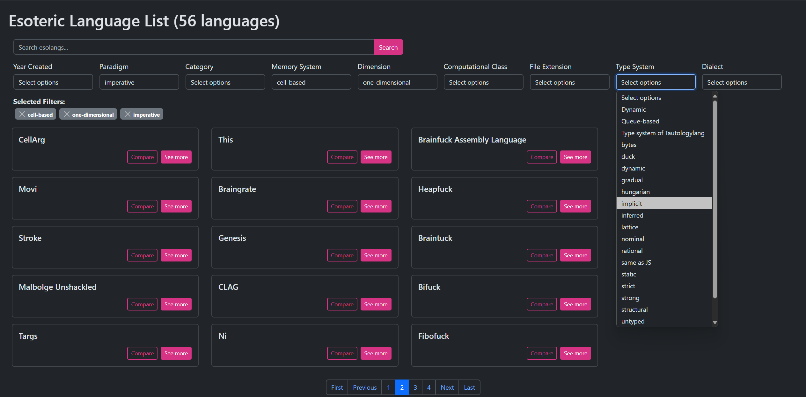
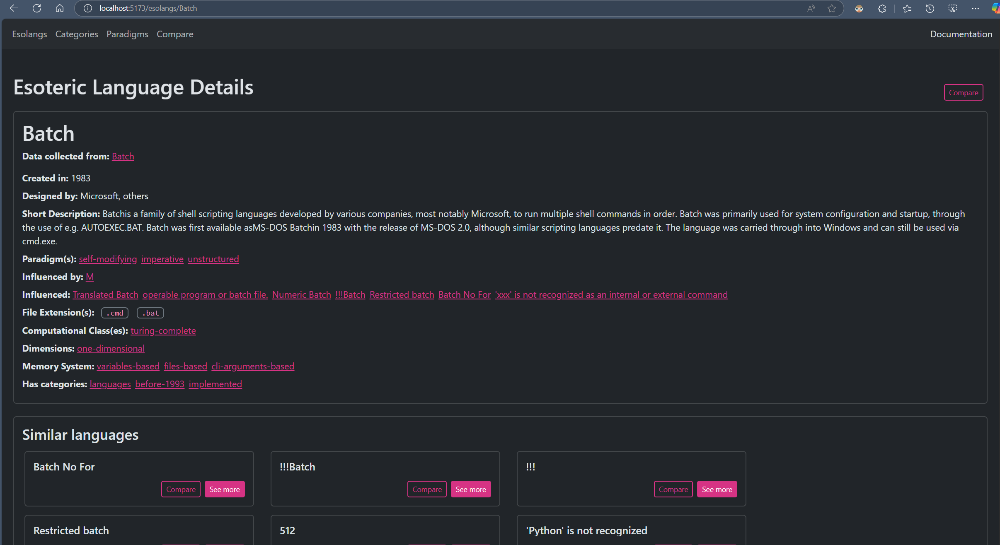
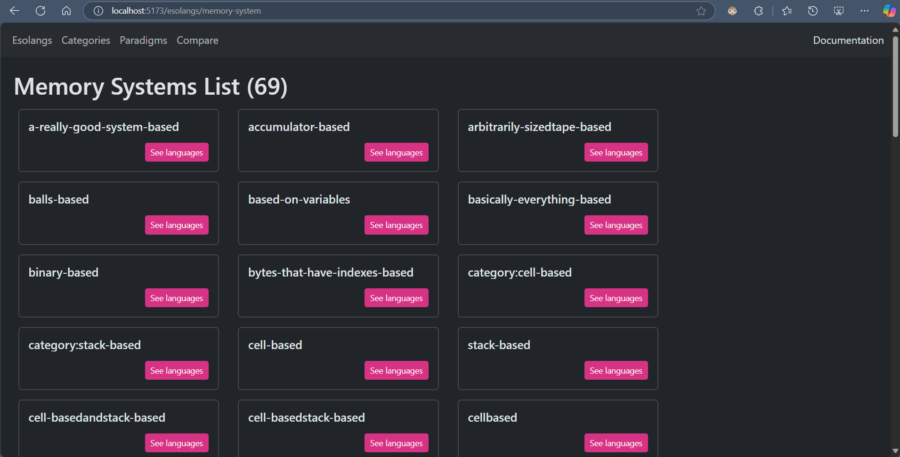
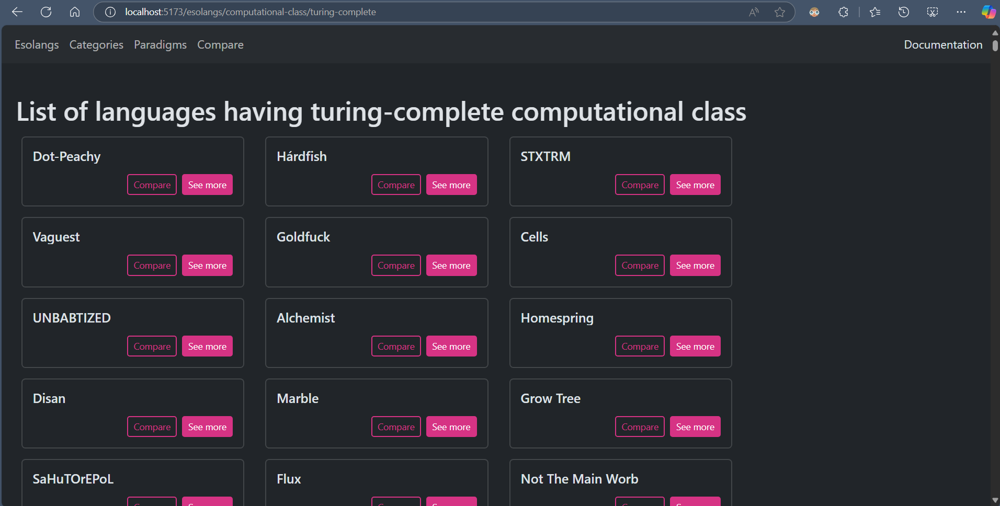
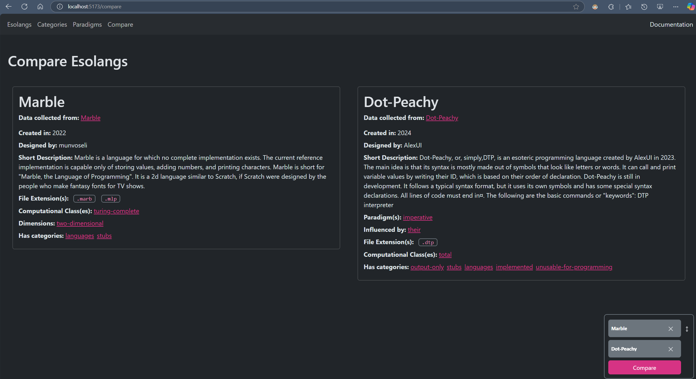

The Esoteric Language Explorer (ELAn) is an innovative platform designed to catalog, analyze, and recommend esoteric programming languages. It combines a robust ontology with semantic web technologies to provide researchers, developers, and enthusiasts with structured insights into esoteric languages, their interpreters, tools, and paradigms. By exposing a SPARQL endpoint, ELAn ensures compatibility with Linked Data principles, enabling dynamic interaction with external knowledge bases such as Wikidata and DBpedia. This document outlines the system’s architecture, internal data models, technical APIs, knowledge integration strategies, and pragmatic usage.
Esoteric programming languages, commonly known as "esolangs," represent an unconventional approach to programming language design. These languages are often created as artistic endeavors, intellectual challenges, or explorations of alternative computational paradigms rather than as tools for mainstream software development. Their unique structures, constraints, and principles push the boundaries of conventional programming, fostering creativity and theoretical insights into computation.
This document presents the Esoteric Language Explorer (ELAn), a web-based system aimed at providing comprehensive information on esoteric programming languages. ELAn enables users to search, explore, and analyze these languages through an interactive and structured platform. By integrating semantic web technologies and an RDF-based ontology, the system facilitates advanced search capabilities, knowledge discovery, and meaningful relationships between esolangs, their paradigms, and computational properties.
The internal data structures define how esoteric programming languages and their attributes are represented within the application. The core data model is designed to capture essential properties, relationships, and classifications of these languages in a structured format.
The primary entity in the system is the Esolang, which represents an esoteric programming language. Each Esolang is associated with various attributes that describe its origins, characteristics, and influences. The key attributes include:
The application uses an RDF (Resource Description Framework) model to structure and store information about esoteric programming languages. RDF triples (subject-predicate-object) define relationships between entities, ensuring a flexible and queryable knowledge graph.
For example, a triple could represent:
(LanguageX, esolang:hasParadigm, Functional)
(LanguageY, esolang:hasComputationalClass, Turing-complete)
The RDF model is implemented using
rdflib
in Python, with entities like EsotericLanguage linked to properties such as
designedBy, computationalClass, and memorySystem.
The ontology is structured around the core concept of esoteric programming languages (esolangs). The primary classes and properties used in the RDF model include:
These choices allow for a rich representation of esolangs and their features, making it possible to describe each language's attributes in a structured manner.
This RDF model enables efficient querying and retrieval of data related to esolangs. For instance, users can:
The RDF data is queried using SPARQL, enabling structured searches based on relationships. The application provides queries to retrieve language metadata, classifications, and influences.
Example query to list all esoteric languages:
PREFIX esolang: < BASE_URI >
PREFIX rdf: <http://www.w3.org/1999/02/22-rdf-syntax-ns#>
SELECT (STRAFTER(STR(?esolang), "BASE_URI") AS ?name)
WHERE {
?esolang rdf:type esolang:EsotericLanguage .
}
In this query:
More complex queries filter languages based on attributes such as paradigms or computational classes.
Example query to retrieve all Turing-complete languages:
PREFIX esolang: < BASE_URI >
PREFIX rdf: <http://www.w3.org/1999/02/22-rdf-syntax-ns#>
SELECT ?language
WHERE {
?language rdf:type esolang:EsotericLanguage .
?language esolang:hasComputationalClass "Turing-complete" .
}
By leveraging RDF and SPARQL, the application ensures efficient querying and structured knowledge representation.
The application exposes a FastAPI-based RESTful API that interacts with an underlying SPARQL endpoint to fetch and manage data about esoteric programming languages (esolangs). The API includes multiple endpoints to retrieve lists, search, and fetch detailed information on esolangs, their attributes, and related data.
Fetches a list of all esolangs available in the system.
GET /api/esolangs
Returns a list of esolang names.
Fetches detailed information about a specific esolang identified by its name.
GET /api/esolangs/{esolang_name}
The response includes attributes of the esolang, such as computational class, paradigm, year of creation, and more.
Allows searching for esolangs based on various filters, including search terms, paradigm, category, computational class, and more.
GET /api/esolangs/search/?search_term={search_term}&computational_class={computational_class}&category={category}
Supports advanced filtering using query parameters. The results will include esolang names that match the criteria.
These endpoints allow users to retrieve unique values for various attributes of esoteric programming languages (esolangs). The attributes available include years of creation, categories, paradigms, computational classes, memory systems, dimensions, type systems, dialects, and file extensions. Each of the endpoints returns a list of unique values for a specific attribute, which can be used for filtering or further exploration.
GET /api/year-created
GET /api/category
GET /api/paradigm
GET /api/computational-class
GET /api/memory-system
GET /api/dimension
GET /api/type-system
GET /api/dialect
GET /api/file-extension
These endpoints retrieve the following types of values for each attribute:
Each endpoint returns a list of unique values relevant to the specified attribute, which can be used for filtering or further exploration when searching for esolangs.
Fetches a list of esoteric programming languages similar to the specified language based on semantic embeddings.
GET /api/esolangs/similar/{esolang_name}
Utilizing a pre-trained machine learning model and cosine similarity calculations, it ranks and returns the top languages that share the most contextually relevant features with the given language, offering a valuable tool for users exploring related esoteric programming languages.
A flexible endpoint allowing users to query the SPARQL endpoint with a user-provided query.
GET /api/sparql-data?query={query}
Accepts a custom SPARQL query and returns the result from the SPARQL endpoint. This allows querying for specific data based on the needs of the user.
Users can search for esoteric programming languages based on various criteria, including language name, year created, paradigm, category, memory system, dimension, computational class, file extension, type system or dialect.
Users can select multiple values for each filter and deselect them with ease, offering a flexible and efficient method to pinpoint specific languages or explore a subset of esolangs.
 Detailed information about each esoteric language includes its name, data source, alias, year of creation, designer, short description, dimensions, memory system, paradigms, influenced by, influences, categories, file extensions, computational classes, and type systems.
Many properties are linked to dedicated pages displaying all languages associated with that property.
Additionally, there is a section listing languages similar to the selected language.
Most properties have a dedicated page displaying all potential values, each linked to the languages that has those specific characteristics. The navigation bar provides direct access to the categories and paradigms pages.
 Throughout the app—whether on the filter page, a property page, or the similar languages section—users can select two languages for a side-by-side comparison.
A persistent bedge at the corner of the page shows which languages are currently selected for comparison, allowing to deselect any or navigate directly to the comparison page from there or via the navigation bar. This feature provides users with considerable flexibility in comparing languages.
The system is built using a combination of modern technologies for both the client-side and server-side components, as well as tools for database management and DevOps. The following technologies are part of the system:
The frontend of the system is built using React.js. The following is a visual representation of the component tree with an explanation of each component’s role:
This modular approach ensures that each component is responsible for a specific part of the user interface, enabling flexibility and scalability in development.
The esolang data used in this system was gathered through various methods, including scraping and querying external resources. Here's an overview of the data acquisition process:
The data from these sources is then transformed into an RDF format, stored in the Apache Jena Fuseki database, and made accessible through SPARQL queries.
Languages pages on esolangs.org lack a structured format, which complicates the scraping process. The scraping was conducted in several stages:
self.PATTERNS = {
"Alias": [
r"the title of this article is also called ([^.]+)",
r"the correct title is actually ([^.]+)",
],
"DesignedBy": [
rf"developed by {user_pattern}",
rf"made by {user_pattern}",
rf"invented by {user_pattern}",
rf"implemented by {user_pattern}",
rf"devised by {user_pattern}",
rf"designed by {user_pattern}",
rf"created by {user_pattern}",
rf"discovered by {user_pattern}",
r"by (User:\S+)",
],
... }
user_pattern = r"(User:\S+|[\w\s]+)"
COMPUTATIONAL_CLASS_REPLACEMENTS = {
"turing-complete": "turing-complete",
"linear-bounded-automat": "linear-bounded-automaton",
"finite-state-automat": "finite-state-automaton",
"turing-tarpit": "turing-tarpit",
"pushdown-automat": "push-down-automaton",
"push-down-automat": "push-down-automaton"
}
The following SPARQL query was used to retrieve information from DBPedia, but only six languages were returned, all of which were already found on esolang.org:
PREFIX dbo: <http://dbpedia.org/ontology/>
PREFIX dbp: <http://dbpedia.org/property/>
PREFIX dbc: <http://dbpedia.org/resource/Category:>
PREFIX dcterms: <http://purl.org/dc/terms/>
PREFIX rdfs: <http://www.w3.org/2000/01/rdf-schema#>
SELECT DISTINCT ?language ?shortDescription
(COALESCE(?designer, ?developer) AS ?designedBy)
?paradigm ?memorySystem
(COALESCE(?released, ?date) AS ?yearCreated)
?influencedBy ?influenced
(COALESCE(?fileExt1, ?fileExt2) AS ?fileExtensions)
?languageName ?url
WHERE {
?language a dbo:ProgrammingLanguage ;
dbo:abstract ?shortDescription ;
dcterms:subject dbc:Esoteric_programming_languages .
OPTIONAL { ?language dbp:paradigm ?paradigm. }
OPTIONAL { ?language dbp:designer ?designer. }
OPTIONAL { ?language dbp:developer ?developer. }
OPTIONAL { ?language dbp:released ?released. }
OPTIONAL { ?language dbp:date ?date. }
OPTIONAL { ?language dbp:memorySystem ?memorySystem. }
OPTIONAL { ?language dbp:influencedBy ?influencedBy. }
OPTIONAL { ?language dbp:influenced ?influenced. }
OPTIONAL { ?language dbp:fileExtensions ?fileExt1. }
OPTIONAL { ?language dbp:fileExt ?fileExt2. }
OPTIONAL { ?language rdfs:label ?languageName. }
OPTIONAL { ?language dbp:url ?url. }
FILTER (lang(?shortDescription) = "en") # Filters abstracts in English
}Similarly, this SPARQL query was used to retrieve data from WikiData. Although it returned 46 results, none of them provided new information beyond what was already available on esolang.org:
SELECT DISTINCT ?language ?languageLabel
?description ?designerLabel ?inception
?publicationDate ?influencedByLabel ?influencedLabel
?fileExtensionLabel ?URL
WHERE {
?language wdt:P31 wd:Q610140. # Instance of "esoteric programming language"
OPTIONAL { ?language rdfs:label ?languageLabel.
FILTER(LANG(?languageLabel) = "en") }
OPTIONAL { ?language wdt:P50 ?designer. }
OPTIONAL { ?language wdt:P571 ?inception. }
OPTIONAL { ?language wdt:P577 ?publicationDate. }
OPTIONAL { ?language wdt:P737 ?influencedBy. }
OPTIONAL { ?language wdt:P1705 ?influenced. }
OPTIONAL { ?language wdt:P1195 ?fileExtension. }
OPTIONAL { ?language wdt:P856 ?URL. }
SERVICE wikibase:label { bd:serviceParam wikibase:language "en". }
}
ORDER BY ?languageLabelUse the system to find languages that are similar to the well-known esoteric language Brainfuck.
Users learn about other languages that share features with Brainfuck, which could be useful for comparative studies or for users looking to expand their knowledge of esoteric languages with similar mechanics.
Continuing from the previous case study, compare Brainfuck with another esoteric language, such as Ook!.
Another way to explore paradigms is by finding languages that incorporate diverse programming approaches.
Users can use this feature to study unconventional programming paradigms and their applications in esoteric languages, broadening their understanding of programming concepts.
Watch the demo video below to see the Esoteric Language Explorer in action: